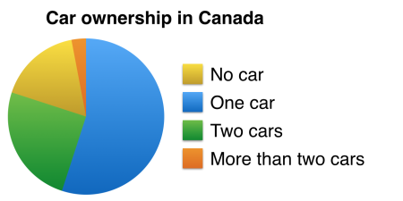

You should spend about 20 minutes on this task.
The chart below shows the proportions of adults in Canada who own one car, two cars, more than two cars, or who do not own a car.
Summarise the information by selecting and reporting the main features and make comparisons where relevant.
Write at least 150 words.

The pie chart below depicts percentage of Canadian mature person who possess one or more than one four-wheelers or also those who does not have their own car.
Overall, more than half of grown person has their own automobiles, from all most containes one car.
It is clear that,adults like to have at least one car,over 50% of the Canadian mature people. While, roughly fourth quarter of adults living in Canada likely to have more than one cars. 15% of the Canadian teenagers do not like to have any motor car. Moreover, roughly 5% of adults love to spend more money on motor vehicles, by buying 2 or plus automobiles.
From chart, most of adults in Canada prefer to have single car, followed by two car owners whose percentage are quite similar to people owning no four wheeler. There are very few people having 2 cars or more.
Write about the following topic.
Some universities now offer their courses on the Internet so that people can study online.
Is this a positive or negative development?
Give reasons for your answer and include any relevant examples from your own knowledge or experience.
It is true that online courses are becoming a common feature of university education. Although there are some drawbacks of Internet-based learning, I would argue that there are far more benefits.
The main drawback of the trend towards online university courses is that there is less direct interaction. Students may not have the opportunity to engage face-to-face with their teachers, and will instead have to rely on written forms of communication. Similarly, students who study online do not come into direct contact with each other, and this could have a negative impact on peer support, discussion and exchange of ideas. For example, whereas students on traditional courses can attend seminars and even discuss their subjects over coffee after lessons, online learners are restricted to chatting through website forum areas. These learners may also lack the motivation and element of competition that face-to-face group work brings.
Despite the negatives mentioned above, I believe that online university courses are a positive development for various reasons. Firstly, they allow learners to study in a flexible way, meaning that they can work whenever and wherever is convenient, and they can cover the material at their own pace. Secondly, the cost of a university education can be greatly reduced, while revenues for institutions may increase as more students can be taught. Finally, online learning offers open access to anybody who is willing to study, regardless of age, location, ability and background. For example, my uncle, who is 65 years old, has recently enrolled on an online MBA course in a different country, which would have been impossible in the days before Internet-based education.
In conclusion, while I recognise the possible disadvantages of online learning, I consider it to be a positive development overall.
(Band 9.0)